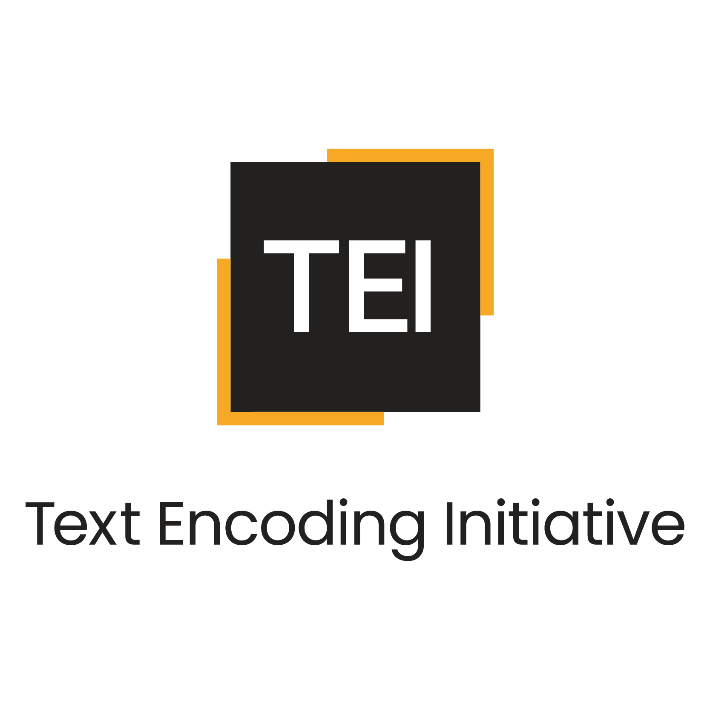

My name is Jennifer James. I have worked for 27 years at a
university library in the United States. I fell in love with
computer coding when I was in junior high school. I have taught
myself many languages over the years. Although coding has never
been part of my job description, for the last 10 years 20% of my
work time has been allocated to coding projects. Some of these are
showcased below.
Around the first of the year in 2025, I started learning how to do
PDF remediation using Equidox and Adobe Acrobat Pro. I am learning
how to apply the WCAG 2.2 standards and becoming comfortable with
VPAT. Although we have not gone live yet, I find that my other
computer coding skills, especially HTML, are helping me with
this project.

TEI
I used TEI (Text Encoding Inititive, a subset of XML) to
mark up a poem by Wordsworth. This encodes things like
title, author, rhyme scheme, type of work ("poem" in this case),
etc.
Here are the technologies I used:
- TEI
- XML
- Windows
- Oxygen XML editor

Python
I read a journal article (below) which inspired me to create a
Python script to compare very generally
the number of male and female authors by comparing author names in
library catalog records to lists of male/female given names.
Unfortunately but not suprisingly, there were many more
male than female authors.
There are some flaws in this approach, including:
- This only looked at the first author on the record
- Many authors of scholarly articles use only initials
Here are the technologies and sources I used:
- Python
- NLTK
- IDLE
- Larivière, Vincent, et al. “Bibliometrics: Global Gender Disparities in science.” Nature, vol. 504,
no. 7479, 12 Dec. 2013, pp. 211–213,
https://doi.org/10.1038/504211a.
- Bird, Steven, et al. Natural Language Processing with Python.
O’Reilly, 2009.
- Windows